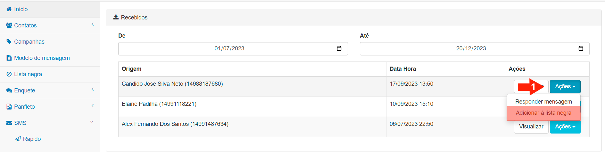

OPTOUT é um termo que se originou na língua inglesa, usado no marketing como nomenclatura para aquele destinatário escolher tirar o seu nome de mailins ou listas destinadas a enviar mensagens de qualquer assunto.
Conforme a LGPD - Lei Geral de Proteção de Dados e a Lei Eleitoral, o destinatário das mensagens devem ter a opção de sair das relações de remessas de SMS, às quais não forem de seus interesses.
Nesta funcionalidade são listados todos os contatos que fizeram esta opção, informando ao usuário que para aqueles contatos a funcionalidade “Comunicação Ativa” não enviará mais mensagens, respeitando assim a opção do destinatário.
OBSERVAÇÃO: Ainda que o contato tenha solicitado ser retirado da relação de envio de SMS, seus dados permanecerão no cadastro de contatos e grupos do usuário, apenas para esses contatos a Funcionalidade “Comunicação Ativa” não enviará mais mensagens.
Inserindo o Contato
Existem duas formas do contato ser inserido nessa Lista de OPTOUT:
A mensagem é enviada com a opção Sair, que dá ao contato destinatário da mesma, a possibiloidade de responder a mensagem por SMS, com a palavra sair, resposta essa que, automaticamente, incluirá aquele contato na Lista de OPTOUT.
Opção de OPTOUT ao Contato
O contato, destinatário de uma determinada mensagem, ao invés de apenas responder com a expressão sair, responde com o desejo de não mais receber comunicações de sua instituição.

OPTOUT manual do Contato
Neste caso, você vai a tela de respostas recebidas, clica no botão Ações, assinalado pela seta (1), escolhe a opção OPTOUT de forma manual, um a um, que se pronunciar pela saída.
Cancelando a OPTOUT
Pode acontecer que, falando com o cidadão, explicando a ele, seja através de campanhas publicitárias, seja através de argumentação por telefone ou mesmo presencialmente, o mesmo possa demonstrar interesse por voltar a receber mensagens de sua instituição; tendo em vista que as mensagens sempre devem ser de conteúdo relevante para a população.
Neste caso, é possível revertar e opção que o cidadão, ou cidaõas fizderam pela lista OPTOUT.
Cancelando a opção por OPTOUT
Para tanto, basta você consultar a lista de OPTOUT na opção correta do menu lateral da funcionalidade "Comunicação Ativa" e buscar aquele cidadão, inserindo três quaisquer letras em sequência de seu nome no caompo Procurar contatos, assinalado na figura pela seta (1).
Ao localizar o cidadão desejado, no quadro Número, conforme assinalado pela seta (2), clique no botão Remover, conforme seta (3), para cancelar a opção OPTOUT e permitir que o cidadão volte a receber mensagens nos grupos dos quais participa.